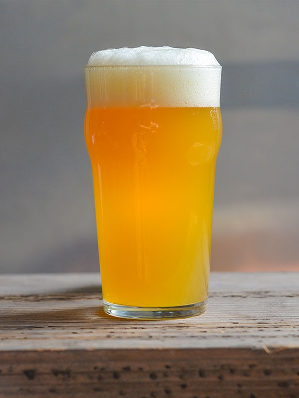

Na tej podstronie są przedstawione różne style piwne.
Porter

Ciemne, mocne piwo górnej fermentacji o barwie od rubinowej do czarnej, pochodzące z Anglii.Początkowo piwo typu porter było dość mocne, o zawartości ekstraktu słodowego do 15% i alkoholu do 6,5%, warzone ze słodu ciemnego. Obecnie angielskie portery są słabsze (ekstrakt do 11%, alkohol do 5%). Do ich warzenia jako słodu bazowego używa się słodu jasnego, a barwę uzyskuje przez dodatek słodu ciemnego, palonego, karmelowego. Stosuje się też dodatki niesłodowe w postaci kukurydzy i cukru. Istnieje również polska odmianna portera nazywana Porterem Bałtyckim. Od 2016 roku trzecia sobota stycznia jest obchodzone Święto Porteru Bałtyckiego.
Pilzner
Typ piwa fermentacji dolnej. Nazwę swoją piwo to zawdzięcza miejscowości Pilzno (Plzeň) w Czechach, gdzie w 1842 roku opracowano jego oryginalną recepturę. Po raz pierwszy w obrocie handlowym znalazło się to piwo pod marką Pilsner Urquell.
Do produkcji używa się słodu pilzneńskiego (czasem dodaje się niewielkie ilości słodu karmelowego jasnego), chmielu żateckiego i miękkiej wody. Zacieranie słodu powinno odbywać się metodą dekokcji, powinno używać się czeskich drożdży dolnej fermentacji, a piwo lageruje się w niskich temperaturach.
Surowce – miękka woda z niską zawartością minerałów, chmiel żatecki, morawski słód jęczmienny, czeskie drożdże dolnej fermentacji.
Wygląd – barwa piwa od jasnożółtej do jasnobursztynowej. Piana biała, trwała, obfita, drobnopęcherzykowa i gęsta. Piwo powinno być bardzo lub doskonale klarowne.
Aromat – na pierwszym planie wyczuwalne są wyraźne ziołowo-korzenne aromaty czeskich chmieli. Na drugim planie wyczuwa się aromaty od słodu – słodkie, herbatnikowe, rzadziej karmelowe. Dopuszcza się delikatne aromaty diacetylu.
Smak – początkowo wyczuwalne słodkie smaki słodowe (czasem karmelowe), następnie wyraźna smak chmielu, a na koniec intensywna goryczka. Piwo powinno być rześkie, orzeźwiające, z półwytrawnym finiszem. Może być czasem lekko kwaskowe. Dopuszczalny jest lekki smak diacetylu na drugim planie. Goryczka od średniej do mocnej; może zalegać po przełknięciu.
Gose
Odmiana piwa pszenicznego warzonego w Niemczech, w okolicach miejscowości Lipska i Goslar (przez które przepływa rzeka Gose). Uznawane za jedno z najstarszych piw na świecie (czasy cesarza Ottona III, około 996 r.). Tradycyjnie powstawało metodą spontanicznej fermentacji, obecnie warzone przy użyciu drożdży górnej fermentacji i dodanie bakterii kwasu mlekowego lub słodu zakwaszającego. Co nietypowe dla piw niemieckich, w procesie warzenia dodawana jest kolendra i sól. W smaku wyraźnie kwaśne (co przywołuje na myśl lambika), słone, delikatnie chmielowe i ziołowe. Alkohol waha się na poziomie 4-5% obj.
Lambic

Belgijski rodzaj piwa fermentacji spontanicznej produkowanego ze słodu jęczmiennego z dodatkiem pszenicy.
Metoda fermentacji piwa lambic za pomocą szczepów dzikich drożdży jest najstarszą znaną metodą produkcji piwa.
Lambic jest piwem regionalnym produkowanym w rejonie Payottenland położonym na zachód od Brukseli. Za najlepsze miejsce do jego fermentacji uznawana jest dolina rzeki Zenne. Wytwarzany jest ze słodu jęczmiennego z dodatkiem pszenicy niesłodowanej. Przy czym ten drugi składnik stanowi ok. 30% zboża w zasypie. Jako przyprawy stosowany jest stary i wysuszony chmiel.
Piwo powstaje poprzez wystawienie w zimie gorącej brzeczki na otwarte powietrze, w celu przeprowadzenia tzw. fermentacji spontanicznej polegającej na kontakcie płynu z dzikimi drożdżami Dekkera i innymi mikroorganizmami unoszącymi się w powietrzu. Lambic może dojrzewać do pięciu lat w zbiornikach i beczkach leżakowych, które wcześniej służyły do przechowywania wina.
Stout
Ciemne piwo górnej fermentacji, rodzaj ale. Zdaniem niektórych stout wywodzi się bezpośrednio od porteru (nazwa użyta pierwszy raz w 1721 roku, na określenie ciemnego piwa warzonego z palonego słodu), inni zaś twierdzą, że obie nazwy są tożsame (chociaż określenie stout było używane już wcześniej, pojawiając się pierwszy raz w 1677 roku). Najbardziej znanymi przedstawicielami są piwa Guinness oraz Murphy's Irish Stout. Stout jest wytwarzany z mocno prażonego słodu jęczmiennego i cechuje się silną goryczką związaną z wysoką zawartością chmielu. Najpopularniejsze są wytrawne stouty (dry i bitter stout). Poza Irlandią i Szkocją piwo stout jest produkowane m.in. w Australii.
Witbier
Pszeniczne piwo o kilkusetletniej tradycji wywodzące się z Belgii. Odznacza się wyraźnym charakterem korzenno-zbożowym ze słodko-wytrawnym cytrusowym posmakiem. Warzone z dodatkiem ozimej pszenicy niesłodowanej – może wynosić nawet 50% zasypu, słodu jęczmiennego typu pilzneńskiego, owsa oraz świeżo zmielonych skórek cytrusowych curacao, których jednak naturalna goryczka nie powinna być nadmiernie wyczuwalna. Czasami aromat i smak wzbogaca dodatek kolendry, imbiru, cynamonu lub niektórych odmian pieprzu. Witbier fermentowany jest z użyciem specjalnych szczepów drożdży podkreślających cytrusowy charakter piwa. Jest to piwo lekkie, niefiltrowane, niezwykle orzeźwiające. Barwa witbiera waha się od jasnosłomkowego do jasnozłotego. Ze względu na brak filtracji i dodatek niesłodowanej pszenicy sprawia wrażenie mleczno-waniliowego, lekko kremowego shake'a. Finisz jest wytrawny, ale nie gorzki, z nutą cytrusowości i słodu pszenicznego. Zarówno chmiel jak i goryczka pochodząca od chmielu są niemal niewyczuwalne i nie burzą owocowo-korzennego charakteru piwa. Pełnia smakowa witbiera nie powinna być ani zbyt wątła ani zbyt obfita, ciężka, esencjonalna. Witbier jest piwem eleganckim, gładkim, rześkim i umiarkowanie treściwym. Nie nadaje się do długiego leżakowania, powinien być pity świeży i młody.
IPA
Piwo górnej fermentacji z mocnym chmielowym aromatem i w związku z tym, również bardzo charakterystycznym posmakiem goryczki. To piwo powstało po to, żeby mieszkańcy brytyjskich kolonii mogli orzeźwić się w upalne dni. Tradycyjne brytyjskie piwa źle znosiły długie podróże statkami i nawet na najszybszych kliprach potrafiły się zepsuć zanim trafiły na stoły w Indiach. Na szczęście brytyjscy piwowarzy wiedzieli, że chmiel ma właściwości konserwujące i dlatego uwarzyli dla swoich rodaków mieszkających za oceanem piwo z odpowiednio większą dawką szyszek chmielowych. To był strzał w dziesiątkę. Takie piwo bez problemu znosiło dalekie podróże.
APA
American Pale Ale. Jasne, lekkie, szczodrze nachmielone, przeważnie dość goryczkowe i bardzo aromatyczne piwo górnej fermentacji . APA nie są piwami mocnymi, to raczej lekkie i orzeźwiające pozycje. Goryczka w tym stylu także nie powinna wykręcać języka i twarzy w grymasie. APA występują oczywiście w różnych wariantach i podzielić je możemy ze względu na kraj pochodzenia użytych odmian chmielu. Na tablicy w pubie czy na etykiecie możecie więc odnaleźć: New Zealand Pale Ale (NZPA), Polish Pale Ale (PPA), English Pale Ale (EPA) czy Australian Pale Ale. Ilu piwowarów, tyle pomysłów. Do dyspozycji są przecież chmiele Słoweńskie, Francuskie, Niemieckie, Japońskie czy z RPA.
RIS
Rosyjski stout imperialny to piwo górnej fermentacji o bardzo bogatym aromacie, składającym się przede wszystkim z chmielu, alkoholu, ciemnych owoców, palonego zboża, a także kawy bądź gorzkiej czekolady. Kolor tego trunku w zależności od rodzaju waha się pomiędzy bardzo ciemnym burgundem a typową czernią. Piwo jest nieprzezroczyste, a występująca na nim piana bardzo gęsta. Zróżnicowany i wyjątkowo intensywny smak pozwala wyczuć nuty palonego zboża, estrów owocowych, czekolady, a także palonych rodzynek bądź smoły. Trunek jest bardzo mocny zarówno w smaku, jak i zapachu, jednak interpretacja tego gatunku pomiędzy angielskimi a amerykańskimi wersjami nieco różni się od siebie. Gęstość początkowa w przypadku tego piwa wynosi 18,5-27°Blg, natomiast końcowa 4,5–7,5°Blg. Goryczka mieści się zwykle w przedziale 50-90 IBU. Piwo to nie było wcale warzone w Rosji, a na terenia Anglii. Orginalna receptura stouta musiała zostać zmieniona żeby mogła przetrwać tak długą podróż, dlatego to zawartością alokoholu bliżej mu do portera.